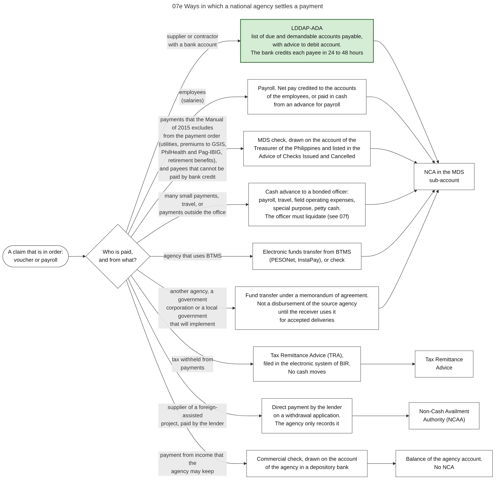

Diagram 07e · Mermaid flowchart
Ways in which a national agency settles a payment
Question: Which instrument does an agency use to pay, depending on who is paid and from which source?

What the diagram shows
- Question: which instrument does an agency use to pay, depending on who is paid and from which source?
- How to read it: left = the situation. Middle = the instrument. Right = the cash authority or the account that it uses (see 05d).
- Sources: the Manual names six modes of disbursement: checks (MDS or commercial), cash from a cash advance, advice to debit the account, tax remittance advice, working fund or cash disbursement ceiling, and direct payment [GAM-V1 Ch.6 s.7]. Payment order (LDDAP-ADA) as the mode for accounts payable, and the four kinds of payment that are excluded from it [GAM-V1 Ch.6 s.50][CL2013-16A]. MDS checks and commercial checks [GAM-V1 Ch.6 s.2, s.8]. Advice of Checks Issued and Cancelled [GAM-V1 Ch.6 s.12][eMDS]. Checks only for payees that cannot be paid by bank credit [CL2018-14]. Salaries through bank accounts, and advances for payroll [GAM-V1 Ch.6 s.15, s.57]. Petty cash: not more than PHP 15,000 for one transaction in the Manual of 2015 [GAM-V1 Ch.6 ss.35-39]. Tax Remittance Advice [GAM-V1 Ch.6 ss.60-62]. Direct payment by a lender and the Non-Cash Availment Authority [GAM-V1 Ch.6 ss.66-68][NBC599 s.4.2.2.1]. Transfers to another agency [GAM-V1 Ch.6 s.63][NBC599 s.3.4]. Purchases from the Procurement Service are paid directly to it [GAM-V1 Ch.8 s.15]. Online subscriptions by purchase card or credit card [IRR12009 s.35.13]. Electronic transfer from BTMS [CL2025-8].
- Not verified: whether the limit of PHP 15,000 for one petty cash payment is still in force.
Code

---
title: "07e Ways in which a national agency settles a payment"
config:
flowchart:
wrappingWidth: 900
---
flowchart LR
%% QUESTION THIS DIAGRAM ANSWERS: which instrument does an agency use to pay, depending on who is paid and from which source?
%% READING: left = the situation. Middle = the instrument. Right = the cash authority or the account that it uses (see 05d).
%% SOURCES: the Manual names six modes of disbursement: checks (MDS or commercial), cash from a cash advance, advice to debit the account, tax remittance advice, working fund or cash disbursement ceiling, and direct payment [GAM-V1 Ch.6 s.7]. Payment order (LDDAP-ADA) as the mode for accounts payable, and the four kinds of payment that are excluded from it [GAM-V1 Ch.6 s.50][CL2013-16A]. MDS checks and commercial checks [GAM-V1 Ch.6 s.2, s.8]. Advice of Checks Issued and Cancelled [GAM-V1 Ch.6 s.12][eMDS]. Checks only for payees that cannot be paid by bank credit [CL2018-14]. Salaries through bank accounts, and advances for payroll [GAM-V1 Ch.6 s.15, s.57]. Petty cash: not more than PHP 15,000 for one transaction in the Manual of 2015 [GAM-V1 Ch.6 ss.35-39]. Tax Remittance Advice [GAM-V1 Ch.6 ss.60-62]. Direct payment by a lender and the Non-Cash Availment Authority [GAM-V1 Ch.6 ss.66-68][NBC599 s.4.2.2.1]. Transfers to another agency [GAM-V1 Ch.6 s.63][NBC599 s.3.4]. Purchases from the Procurement Service are paid directly to it [GAM-V1 Ch.8 s.15]. Online subscriptions by purchase card or credit card [IRR12009 s.35.13]. Electronic transfer from BTMS [CL2025-8].
%% NOT VERIFIED: whether the limit of PHP 15,000 for one petty cash payment is still in force.
S(["A claim that is in order:<br/>voucher or payroll"]) --> Q{"Who is paid,<br/>and from what?"}
Q -- "supplier or contractor<br/>with a bank account" --> I1["LDDAP-ADA<br/>list of due and demandable accounts payable,<br/>with advice to debit account.<br/>The bank credits each payee in 24 to 48 hours"]:::main
Q -- "employees<br/>(salaries)" --> I2["Payroll. Net pay credited to the accounts<br/>of the employees, or paid in cash<br/>from an advance for payroll"]
Q -- "payments that the Manual of 2015 excludes<br/>from the payment order (utilities, premiums to GSIS,<br/>PhilHealth and Pag-IBIG, retirement benefits),<br/>and payees that cannot be paid by bank credit" --> I3["MDS check, drawn on the account of the<br/>Treasurer of the Philippines and listed in the<br/>Advice of Checks Issued and Cancelled"]
Q -- "many small payments, travel, or<br/>payments outside the office" --> I4["Cash advance to a bonded officer:<br/>payroll, travel, field operating expenses,<br/>special purpose, petty cash.<br/>The officer must liquidate (see 07f)"]
Q -- "tax withheld from<br/>payments" --> I5["Tax Remittance Advice (TRA),<br/>filed in the electronic system of BIR.<br/>No cash moves"]
Q -- "supplier of a foreign-assisted<br/>project, paid by the lender" --> I6["Direct payment by the lender<br/>on a withdrawal application.<br/>The agency only records it"]
Q -- "another agency, a government<br/>corporation or a local government<br/>that will implement" --> I7["Fund transfer under a memorandum of agreement.<br/>Not a disbursement of the source agency<br/>until the receiver uses it<br/>for accepted deliveries"]
Q -- "payment from income that the<br/>agency may keep" --> I9["Commercial check, drawn on the account<br/>of the agency in a depository bank"]
Q -- "agency that uses BTMS" --> I8["Electronic funds transfer from BTMS<br/>(PESONet, InstaPay), or check"]
I1 --> A1["NCA in the MDS<br/>sub-account"]
I2 --> A1
I3 --> A1
I4 --> A1
I8 --> A1
I5 --> A2["Tax Remittance<br/>Advice"]
I6 --> A3["Non-Cash Availment<br/>Authority (NCAA)"]
I7 --> A1
I9 --> A4["Balance of the agency account.<br/>No NCA"]
classDef default fill:#ffffff,stroke:#444444,color:#111
classDef main fill:#d5ecd5,stroke:#2e6b2e,color:#111,stroke-width:2px